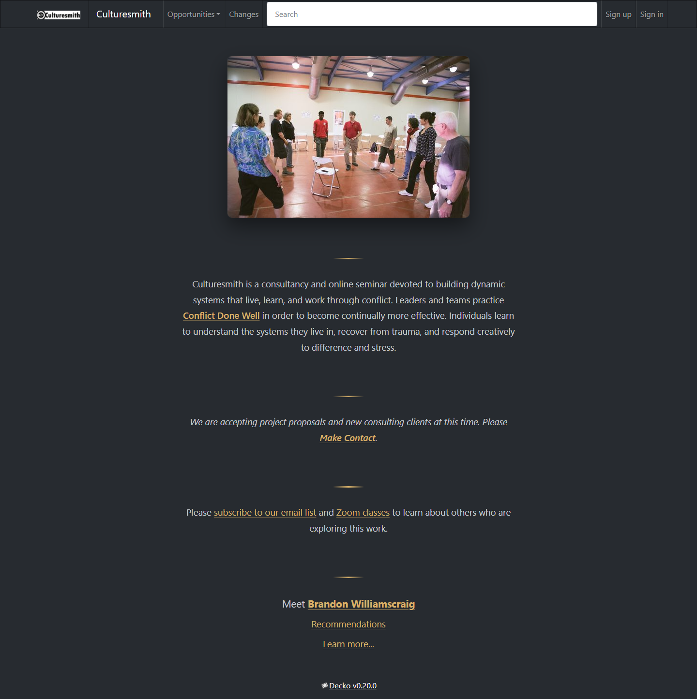
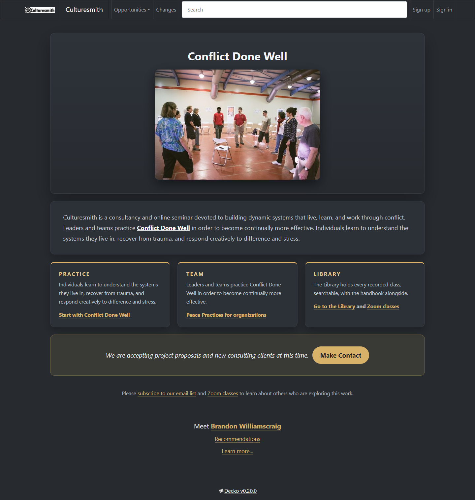
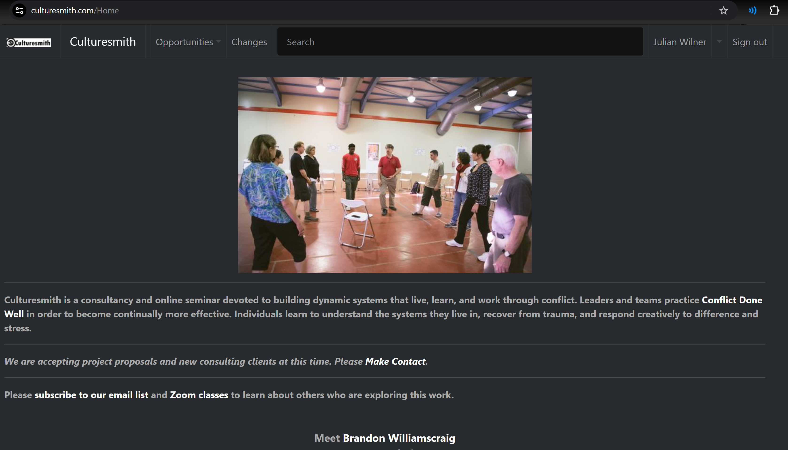

VARIANT A - the same site, sharper (127.0.0.1:3118/Culturesmith+Home_Variant_A, full page)

VARIANT B - the decko-native home (127.0.0.1:3118/Culturesmith+Home_Variant_B, full page)

REFERENCE - the live Home page (culturesmith.com, signed in, captured 2026-10-25)
